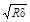
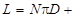
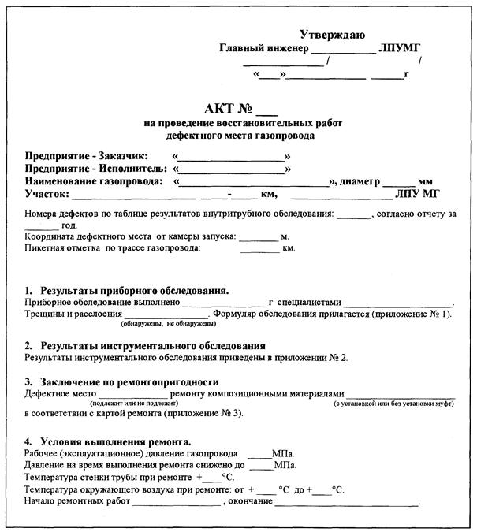
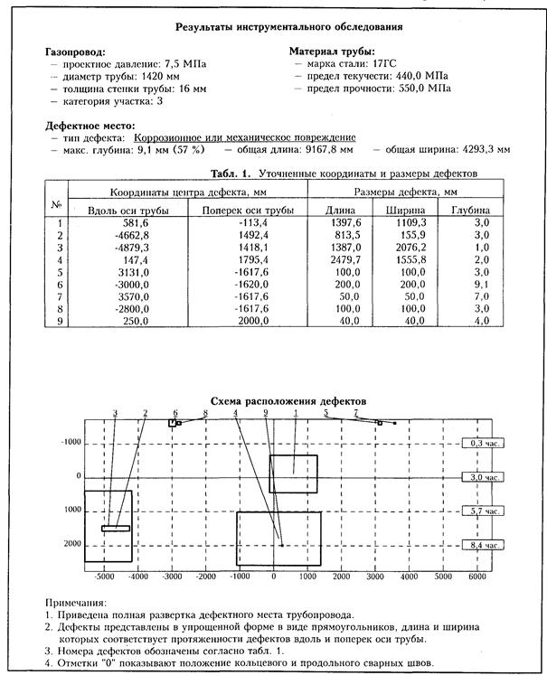
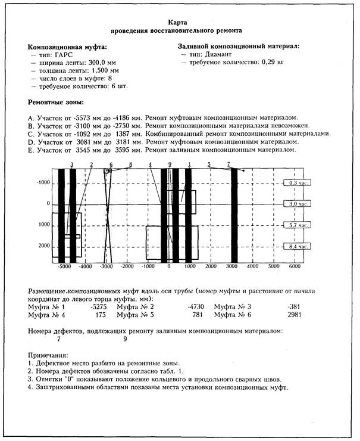

ОТКРЫТОЕ АКЦИОНЕРНОЕ ОБЩЕСТВО "ГАЗПРОМ"
ВЕДОМСТВЕННЫЕ СТРОИТЕЛЬНЫЕ НОРМЫ
ИНСТРУКЦИЯ
ПО РЕМОНТУ ДЕФЕКТНЫХ ТРУБ
МАГИСТРАЛЬНЫХ ГАЗОПРОВОДОВ
ПОЛИМЕРНЫМИ КОМПОЗИЦИОННЫМИ МАТЕРИАЛАМИ
ВСН 39-1.10-001-99
МОСКВА 2000
Система нормативных документов в газовой промышленности
ВЕДОМСТВЕННЫЕ СТРОИТЕЛЬНЫЕ НОРМЫ
ИНСТРУКЦИЯ
ПО РЕМОНТУ ДЕФЕКТНЫХ ТРУБ
МАГИСТРАЛЬНЫХ ГАЗОПРОВОДОВ
ПОЛИМЕРНЫМИ КОМПОЗИЦИОННЫМИ МАТЕРИАЛАМИ
ВСН 39-1.10-001-99
ОАО «Газпром»
Производственным объединением
«Спецнефтегаз»
Всероссийский
научно-исследовательский институт
природных газов и газовых технологий
(ВНИИГАЗ)
Информационно-рекламный центр газовой промышленности
(ИРЦ Газпром)
МОСКВА 2000
ПРЕДИСЛОВИЕ
РАЗРАБОТАН Производственным объединением «Спецнефтегаз», Всероссийским научно-исследовательским институтом природных газов и газовых технологий.
ВНЕСЕН Управлением проектирования и экспертизы ОАО «Газпром».
УТВЕРЖДЕН Членом Правления ОАО «Газпром» Б. В. Будзуляком 19 октября 1999 г.
ВВЕДЕН В ДЕЙСТВИЕ Приказом ОАО «Газпром» от 15 февраля 2000 г. № 23 с 5 марта 2000 г.
СОГЛАСОВАН Федеральным горным и промышленным надзором России от 16 ноября 1999 г. № 10-03/724, Управлением по транспортировке газа и газового конденсата ОАО «Газпром».
ВВЕДЕН ВПЕРВЫЕ
СОДЕРЖАНИЕ
ВВЕДЕНИЕ
«Инструкция по ремонту дефектных труб магистральных газопроводов полимерными композиционными материалами» регламентирует производство ремонтно-восстановительных работ действующих трубопроводов с применением полимерных композиционных материалов без остановки транспорта продукта. В инструкции приведена классификация типов подлежащих ремонту дефектов, способы и технология безопасного восстановительного ремонта трубопроводов.
Методические рекомендации разработаны в Управлении диагностики и ремонта ПО «Спецнефтегаз» (к. т. н. Мирошниченко Б. И., к. т. н. Аладинский В. В., к. т. н. Мельников В. Л., к. т. н. Маханев В. О., Гердов М. Г.) и НТЦ «Ремонт газопроводов» ВНИИГАЗа (к. т. н. Велиюлин И. И., к. т. н. Решетников А. Д., к. т. н. Голенко Ю. В., к. т. н. Стебенев В. Н., Карамян С. А., Растворцева А. М.).
Система нормативных документов в газовой промышленности
Ведомственные строительные нормы
Инструкция
по ремонту дефектных труб магистральных газопроводов
полимерными композиционными материалами
Дата введения 2000-03-05
1.1. Действие настоящей инструкции распространяется на ремонт полимерными композиционными материалами дефектных труб магистральных трубопроводов диаметром до 1420 мм включительно с рабочим давлением до 7,5 МПа, предназначенных для транспортировки природного газа, газоконденсата и других продуктов, не содержащих коррозионно-активных компонентов.
1.2. Настоящий нормативный документ определяет порядок, допуск и правила выполнения работ на магистральных трубопроводах при проведении ремонта коррозионных и механических повреждений труб, дефектов сварных стыков с использованием полимерных композиционных материалов (ПКМ).
1.3. Ремонт композиционными материалами осуществляется без остановки эксплуатации трубопровода при снижении рабочего давления.
1.4. Ремонт дефектных труб с использованием композиционных материалов должен обеспечивать восстановление несущей способности трубы в соответствии с требованиями нормативно-технических документов:
· СНиП 2.05.06-85*. Магистральные трубопроводы / Госстрой России. - М.: ГУП ЦПП, 1998;
· СНиП III-42-80*. Магистральные трубопроводы / Госстрой России. - М.: ГУП ЦПП, 1998.
1.5. Данный нормативный документ разработан на основании продолжительного опыта производства работ по ремонту магистральных трубопроводов диаметром 1020-1420 мм композиционными материалами и в развитие действующих нормативных документов:
· Инструкции по ремонту дефектов действующих нефтегазопроводов и нефтепродуктопроводов с применением композиционных спиральных муфт. - М., ВНИИСТ-СКТ, 1998;
· Временного руководящего документа по проведению ремонтных работ с применением клея «Монолит» на объектах газовой промышленности. - М., ВНИИГАЗ, 1996;
· Руководящего документа по применению композиционных материалов фирмы «Диамант» для ремонтных работ на объектах нефтяной и газовой промышленности. - М., ОАО «Газпром», 1998.
1.6. Допускается использование новых полимерных композиционных материалов, прошедших межведомственные испытания по типовой методике ОАО «Газпром» от 11.03.99 г. и согласованных к применению в установленном порядке.
1.7. В зависимости от характера и размеров дефектов предусматривается применение трех вариантов использования ПКМ:
· ремонт заливным композиционным материалом;
· ремонт муфтовым композиционным материалом;
· комбинированный ремонт - сочетание заливного и муфтового композиционных материалов.
1.8. Инструкция регламентирует возможность установки муфт с зазором между смежными муфтами (на основе автоматизированных расчетов с использованием специализированной компьютерной программы), что позволяет производить восстановление несущей способности коррелированных труб на большой площади поражения. Расстояние между муфтами определяется в зависимости от свойств металла труб, прочностных характеристик применяемых композиционных материалов, параметров дефектов.
2.1. Для ремонта дефектов трубопроводов применяются два типа полимерных композиционных материалов: заливной и муфтовый. Заливной ПКМ используется для заполнения дефектов, связанных с потерей металла по толщине стенки трубы. Муфтовый ПКМ обеспечивает восстановление несущей способности труб с дефектами.
2.2. Заливные ПКМ: клей «Монолит» (ВНИИГАЗ) и молекулярметаллы фирмы «Диамант-Металлопластик» ГМбХ (Германия), показавшие при испытаниях и эксплуатации наилучшие адгезионные и прочностные характеристики.
2.3. Муфтовые ПКМ: гибкий анизотропный рулонированный стеклопластик (ГАРС), композиционная спиральная муфта (КСМ), углеродная однонаправленная лента (УОЛ-300-1).
2.4. Отечественные ПКМ изготавливаются и поставляются по следующим техническим условиям:
· ремонтный состав «Монолит+» - ТУ 2252-154-05786904-99;
· ГАРС - ТУ 2296-152-05786904-99;
· УОЛ - ТУ 1916-167-0576346-96;
· КСМ - ТУ 92-115-14-98.
2.7. Поставка ПКМ производится в соответствии с данными сертификатов качества завода-изготовителя.
2.8. Ширина муфтовой композиционной ленты составляет 300 ± 20 мм. Длина стандартных муфт рассчитана на восемь слоев намотки.
2.9. Заливной ПКМ применяется для дефектов небольшой площади (царапины, задиры, дефекты типа каверны, питтинговая коррозия).
3.1. Ремонт труб с применением полимерных композиционных материалов производится для следующих типов, дефектов:
· общая коррозия (наружная и внутренняя);
· питтинговая коррозия;
· задиры, царапины, сколы;
· каверны;
· вмятины глубиной до 5% диаметра трубы;
· дефекты кольцевых сварных стыков - смещение кромок до 30% толщины стенки трубы, утяжины до 20% толщины стенки трубы на длине до 1/12 периметра трубы;
· коррозионные дефекты на сварных стыках.
3.2. Не подлежат ремонту ПКМ следующие дефекты:
· трещины;
· сквозные дефекты;
· стресс-коррозионные дефекты;
· гофры;
· вмятины в сочетании с дополнительным концентратором.
3.3. Перед проведением ремонта в обязательном порядке производится обследование локальной зоны дефекта с помощью неразрушающих методов контроля для выявления трещин.
4.1. Метод ремонта, обеспечивающий восстановление несущей способности ремонтируемых труб в соответствии с СНиП 2.05.06-85*, и допускаемые к производству ремонта дефекты определяются по табл. 1 (в формулах для допускаемых размеров дефектов: R - радиус трубы в мм, d - толщина стенки трубы в мм) или с применением специализированной компьютерной программой автоматизированного расчета «Гриф-2».
Табл. 1. Размеры дефектов, допускаемых к ремонту композиционными материалами
|
Тип дефекта |
Допускаемые размеры дефектов |
Метод ремонта |
|||
|
Глубина, % |
Длина, мм |
Ширина, мм |
|||
|
1 |
Каверны, коррозия |
< 12 |
Без ограничений |
Без ограничений |
Ремонт композиционными материалами не требуется |
|
2 |
Каверны, питтинги |
<65 |
<0,5  |
< 2pR/72 |
Ремонт заливным ПКМ |
|
3 |
Линейные дефекты |
<35 |
<3,0 |
< 2pR/360 |
|
|
4 |
Общая коррозия при отсутствии дефектов по п/п 2, 3 |
<40 |
Без ограничений |
Без ограничений |
Ремонт муфтовым ПКМ |
|
40...50 |
<3,0 |
< 2pR/3 |
|||
|
50...60 |
<2,3 |
< 2pR/8 |
|||
|
5 |
Общая коррозия при наличии дефектов по п/п 2, 3 |
<40 |
Без ограничений |
Без ограничений |
Комбинированный ремонт |
|
40...50 |
<3,0 |
< 2pR/3 |
|||
|
50...60 |
<2,3 |
< 2pR/8 |
|||
4.2. Необходимое количество слоев композиционных муфт N зависит от диаметра, толщины стенки и механических свойств ремонтируемой трубы, размеров дефекта, прочностных характеристик полимерных конструкционных материалов, используемых при ремонте. При ремонте без предварительного автоматизированного расчета требуемое количество слоев композиционных муфт - 8, муфты должны устанавливаться без зазора и полностью закрывать дефект. Автоматизированный расчет позволяет оптимизировать требуемое количество слоев композиционной муфт N в диапазоне от 6 до 12. Длина композиционной ленты L определяется для трубы диаметром D по соотношению:

4.3. Допустимость ремонта с применением композиционных материалов для дефектов глубиной более 60% (кроме одиночных каверн) в каждом конкретном случае должна быть подтверждена расчетом (выполняется программой «Гриф-2»).
4.4. Программа разработана для различных параметров и сочетаний дефектов: одиночные, смежно-расположенные, цепочка дефектов, дефект в дефекте.
4.5. Программа оценивает необходимость проведения ремонта, условия достаточности ремонта заливным ПКМ, условия и параметры комбинированного ремонта, количество муфт для каждого вида и сочетания дефектов, места установки муфт, расстояние между смежными муфтами, минимально допустимое количество слоев композиционной ленты на каждой конкретной муфте.
Расчеты проводятся с учетом механических свойств ремонтируемых труб и используемых ПКМ.
5.1. Ремонт дефектных труб полимерными композиционными материалами выполняется специализированной ремонтной бригадой. Бригада должна иметь:
· лицензию на проведение ремонтных работ;
· протоколы проверки знаний (или удостоверения) членов бригады по применению композиционных материалов, выданные фирмами-производителями ПКМ на основании проведенного обучения;
· квалификационное удостоверение специалиста бригады на работу по ультразвуковому методу неразрушающего контроля не ниже 3 уровня;
· сертификаты качества используемых ПКМ.
5.2. Линейно-транспортное предприятие должно обеспечить:
· назначение руководителя работ, ответственного за организацию и проведение ремонта;
· условия, необходимые для проведения качественного ремонта: подготовку шурфа, очистку дефектной зоны, тентовое укрытие, настилы в шурфах, создание необходимой температуры в палатке при выполнении ремонта труб в зимних условиях, подвод электропитания 220 В;
· мероприятия по технике безопасности при проведении ремонтных работ на трубопроводе;
· снижение давления в трубопроводе до уровня 70% от разрешенного эксплуатационного давления на период времени, обусловленный регламентом работ.
5.3. До начала проведения работ приказами по предприятиям, участвующим в ремонте, назначаются руководители работ, отвечающие за организацию ремонта, качество выполнения работ, соблюдение технологического регламента и техники безопасности.
5.4. Готовность объекта к ремонту, включая принятие необходимых мер безопасности, подтверждается закрытием наряда-допуска на проведение работ, подписанного:
· ответственным за подготовку к ремонту;
· ответственным за проведение собственно ремонта;
· руководителем предприятия.
6.1. До начала производства ремонтных работ с использованием ПКМ выполняются следующие операции:
· проверка соответствия давления в трубопроводе безопасному уровню;
· вскрытие трубопровода;
· снятие изоляционного покрытия;
· визуальный осмотр дефектной зоны трубы с предварительным измерением ее толщины стенки и глубины наиболее крупных каверн;
· пескоструйная очистка поверхности трубы на дефектном участке с использованием портативных установок Сопло-160, Стык-325 и т. п. Допускается механическая зачистка дефектного участка металлической щеткой с помощью шлифмашинки или вручную с качеством поверхности не ниже 3-й степени по ВСН 008-88, ГОСТ 9402-80.
6.2. Допустимость дефектов к ремонту определяется по результатам приборного обследования и измерения их точных параметров.
6.2.1. Выполняются следующие измерения: измерение длины - максимального размера дефекта вдоль оси трубы, ширины - максимального размера дефекта в направлении периметра трубы, глубины - максимального размера дефекта в направлении толщины стенки трубы.
6.2.2. Привязка дефектов по местоположению на трубе производится относительно сварных швов до центра дефекта: по ходу потока относительно кольцевого шва и по часовой стрелке от продольного шва.
6.2.3. Для дефектов типа питтинговой коррозии на фоне общей коррозии отдельно измеряется максимальная глубина общей коррозии и глубина, диаметр и привязка наиболее крупных каверн.
6.2.4. Для групповых дефектов измеряется величина продольной перемычки бездефектного металла трубы между смежными дефектами.
6.2.5. Каждый измеряемый параметр дефекта и его привязка последовательно заносится в таблицу результатов инструментального контроля.
6.3. Допустимость к ремонту дефектов трубы осуществляется с помощью табл. 1 настоящей инструкции или по программе «Гриф-2» при вводе в нее данных о размерах и расположении дефектов, параметров ремонтируемой трубы, механических свойств стали труб и применяемых композиционных материалов.
6.4. При использовании специализированной программы «Гриф-2» после ввода всех параметров и расчета программа выдает один из следующих вариантов ремонта:
· дефект безопасен для последующей эксплуатации, проведение ремонта ПКМ не требуется. В этом случае производится очистка от продуктов коррозии и переизоляция трубы. По требованию заказчика дефект может быть отремонтирован композиционными материалами;
· требуется ремонт только заливным ПКМ;
· требуется ремонт только муфтовым ПКМ;
· требуется комбинированный ремонт композиционными материалами;
· ремонт композиционными материалами невозможен, дефект подлежит вырезке.
6.5. При положительном решении о допустимости ремонта трубопровода композиционными материалами разрабатывается карта проведения восстановительного ремонта, которая является обязательным приложением к акту на выполненный ремонт. В карте указывается способ ремонта ПКМ, количество упрочняющих муфт, их расположение на трубе. При применении программы «Гриф-2» карта разрабатывается по результатам автоматизированного расчета.
6.6. Работы при ремонте дефектов трубопроводов ПКМ выполняются в следующей технологической последовательности:
· разметка участка трубы, подлежащего ремонту;
· обезжиривание зоны ремонта;
· осушка ремонтируемой поверхности безогневым методом (при необходимости);
· приготовление заливного ПКМ;
· послойное нанесение и заполнение заливным ПКМ каверн, узких продольных дефектов, питтинговой коррозии с выдержкой в соответствии с требуемым временем отвердевания;
· обезжиривание поверхности трубы по всему параметру в местах установки упрочняющих муфт;
· приготовление герметизирующей мастики для выравнивания поверхности трубы;
· нанесение мастики для восстановления толщины стенки трубы;
· приготовление клеевого состава для приклеивания композиционной ленты муфты к трубе и склеивания витков ленты между собой;
· намотка композиционной ленты на ремонтируемый участок трубы с нанесением клеящего состава между витками;
· фиксация начала ленты композиционной муфты на трубе;
· натяжение ленты муфты на трубе;
· фиксация конца композиционной ленты;
· заполнение зазоров между витками, обработка торцев муфты клеевым составом;
· проведение контроля отвердевания клеевого состава.
6.7. В местах нанесения клеевых композиций и установки упрочняющих муфт поверхность трубы должны быть протерта ветошью и обезжирена хлопчатобумажной бязью, смоченной в ацетоне ГОСТ 2768. Применение бензина для обезжиривания поверхности трубы не допускается.
6.8. При наличии влаги (конденсата) поверхность трубы перед нанесением ПКМ и установкой упрочняющих муфт должна быть просушена. Температура просушки 40... 60°С. При температуре воздуха ниже +5°С просушка поверхности трубы в месте ремонта обязательна.
6.9. Границы установки композиционных муфт должны быть размечены маркером или мелом по периметру трубы. Разметка выполняется намоткой одного-двух витков шаблона. Ширина шаблона должна быть равна ширине композиционной ленты.
6.10. Перед началом выполнения ремонтных работ проводится визуальный осмотр упрочняющих муфт. При наличии на них трещин, расслоений, вздутий, посторонних включений и заусениц муфты бракуются и установке на трубопровод не подлежат.
6.11. Приготовление клеевых составов для каждого ПКМ и регламент проведения работ с ними должен выполняться в строгом соответствии с Инструкциями на применяемые материалы.
6.12. При ремонте дефектов труб попадание влаги, масел и загрязнений на ремонтируемый участок трубы, на клеевую композицию и на упрочняющую муфту не допускается.
6.13. При ремонте труб диаметром более 720 мм намотка композиционной ленты на трубу производиться с применением специальной технологической оснастки, которая закрепляется в верхней части трубы с помощью двух натяжных ремней. При ремонте труб диаметром до 720 мм рулон с лентой при намотке поддерживается оператором.
6.14. Нанесение клеящего материала на трубу и на композиционную ленту муфты производится послойно с помощью валика равномерным слоем. Толщина слоя при нанесении клеящего материала должна быть 0,5... 0,7 мм. Клеевой состав при намотке наносится на каждый наружный слой ленты, за исключением последнего слоя.
6.15. Перед намоткой начало ленты муфты фиксируется или приклеивается при помощи двусторонней самоклеющейся ленты на поверхности трубы на расстоянии не менее 400 мм от границы дефектного участка. Закрепление начала ленты муфты должно исключить ее прокручивание вокруг ремонтируемой трубы.
6.16. Намотка ленты на трубу должна производиться с натяжением до устранения зазоров. Перекосы ленты при намотке не допускаются. Выступающие слои ленты после намотки должны быть выровнены по торцам муфты.
6.17. При ремонте дефектов трубопровода меньшего диаметра муфтами, предназначенными для ремонта труб большего диаметра, после нанесения на трубу 8-ми слоев ленту муфты необходимо отрезать шлифмашинкой. Линия реза должна быть перпендикулярна к боковым сторонам ленты муфты.
6.18. Для плотного прилегания муфты к ремонтируемой трубе производится дополнительное натяжение ленты, выполняемое вручную с помощью специального приспособления, которое закрепляется на самой композиционной ленте. При натяжении витки ленты упрочняющей муфты должны прокручиваться относительно друг друга.
Если не удается обеспечить натяжение ленты (преждевременное отвердевание клеящего материала, отсутствие надежного закрепления начала ленты на поверхности трубы), то необходимо снять композиционную муфту, разрезав ее пополам по ширине с помощью шлифмашинки, и установить новую муфту. При разрезке композиционной муфты касание абразивным диском поверхности трубы не допускается.
6.19. После натяжения ленты видимые локальные зазоры между муфтой и поверхностью трубы, а также и между слоями ленты должны заполняться клеящим материалом. Торцы установленной композиционной муфты должна быть обработаны клеевым составом, который формуется под углом 30...45° по обеим сторонам муфты.
6.20. После натяжения лента муфты закрепляется с помощью двух натяжных ремней, которые располагаются по краям муфты на расстоянии 20...30 мм от торцев, или липких лент (скотч) шириной 40 мм. Натяжное приспособление после натяжения ленты снимается. Конечный участок последнего витка муфты дополнительно прикрепляется к предыдущему витку с помощью липкой ленты.
6.21. Ремонт с использованием спиральных композиционных муфт может быть использован в качестве упрочнения на локальных участках трубопроводов с внутренней коррозией. Ремонтные работы проводятся после обследования дефекта ультразвуковым толщиномером и определения его глубины и границ. Ремонт выполняется по вышеприведенной технологии установки муфт.
6.22. После установки муфта накрывается полиэтиленовой пленкой (при необходимости). Время полной полимеризации ремонтного соединения составляет 24 часа при температуре окружающего воздуха 15... 35°С и не менее 72 часов при температуре ниже 15°С.
6.23. Для ускорения процесса отвердевания клеевого состава композиционной муфты применяют гибкие электрические подогреватели или воздуходувки, осуществляющие подогрев места установки муфты до температуры 40... 60°С в течение 5...6 часов.
6.24. В процессе ремонта выполняется пооперационный контроль:
· зачистки поверхности трубы в месте установки муфты;
· зачистки дефектного участка трубы;
· приготовления и нанесения заливного композиционного материала;
· приготовления мастики для заполнения дефектов;
· заполнения мастикой дефектов на поверхности трубы;
· приготовления двухкомпонентного клеящего материала;
· нанесения клеящего материала на поверхность трубы и ленту муфты;
· намотки и натяжения слоев муфты;
· качества отвердевания клеевого состава.
6.25. После окончания работ по установке упрочняющей композиционной муфты на трубопровод проводится визуальный контроль и оценка качества ремонта с проверкой: равномерности намотки слоев ленты муфты на трубе, отсутствия зазоров между слоями ленты и зазоров между первым слоем ленты и поверхностью трубы.
При наличии локальных зазоров последние должны заполняться клеящим материалом с помощью шпателя. Подтеки клеевого материала должны быть удалены с помощью шлифмашинки.
6.26. Контроль отвердевания клеящего материала определяется нажатием металлического стержня диаметром 2...3 мм с нагрузкой 5 кгс на слой клея по краям муфты, при этом клеящий материал следует считать отвердевшим при отсутствии визуально наблюдаемых вмятин.
Затвердевание клеящего материала проверяется не менее чем в 8-ми точках периметра трубы.
6.27. После окончания ремонтных работ производится изоляция ремонтируемого участка трубы в месте установки муфты в соответствии с ВСН 008-88, ГОСТ 25812-83. Изоляция трубопровода в месте установки муфты должна проводиться только после отвердевания клеящего материала.
Тип наносимого на отремонтированный участок изоляционного покрытия должен соответствовать типу изоляции трубы.
6.28. Технологические условия проведения ремонта:
минимальная температура стенки трубы - +5°С;
время полимеризации заливного композиционного материала - 3 ч;
время полимеризации композиционных муфт - 24 ч.
Ремонт дефектов с применением ПКМ производится при положительных температурах окружающего воздуха (5...40°С). При более низкой температуре ремонт выполняется в палатках с подачей теплого воздуха Т = 30... 50°С.
7.1. После подготовки поверхности трубы к ремонту, в соответствии с разделом 6, производится ультразвуковая дефектоскопия зоны ремонта для выявления трещин любого происхождения, расслоений и т. п. При их наличии ремонт вмятин и дефектов в сварных стыках с применением ПКМ не допускается.
7.2. Ремонт дефектных кольцевых стыков. Каверны, раковины заполняются заливным ПКМ. На сварной шов устанавливается три композиционные муфты: две - по краям сварного шва вплотную к его усилению, третья - сверху на уже установленные муфты. При этом верхняя муфта должна располагаться по центру сварного шва. Ширина боковых муфт - не менее 100 мм, верхней - не менее 150 мм. Расстояние между боковыми муфтами не должно превышать 40 мм. Количество слоев в каждой монтируемой муфте - 8. Пространство над усилением сварного шва между боковыми муфтами заполняется мастикой по всему периметру трубы заподлицо с поверхностью муфт.
7.3. Ремонт вмятин. Поверхность вмятины заполняется мастикой до выравнивания наружной поверхности трубы. По центру вмятины устанавливается муфта.
7.4. Установка композиционных муфт выполняется в соответствии с технологией и контролем качества работ, изложенных в разделе 6.
8.1. При работе с полимерными композиционными материалами требования техники безопасности должны соответствовать действующим: Правилам безопасности в нефтяной и газовой промышленности. - М.: НПО ОБТ Госгортехнадзора России, 1993; Правилам безопасности в газовом хозяйстве. - М.: Недра, 1992; Правилам безопасности при эксплуатации магистральных газопроводов. - М.: Недра, 1995.
8.2. Требования пожарной безопасности должны соответствовать действующим Правилам пожарной безопасности в газовой промышленности. - М.: Недра, 1986.
8.3. Во избежание поражения электрическим током при нагревании трубы электронагреватели должны соответствовать требованиям ГОСТ 12.2.007.0-75.
8.4. К работе по ремонту действующих трубопроводов допускаются лица не моложе 18 лет, прошедшие инструктаж и обучение безопасным методом производства работ с полимерными композиционными материалами.
8.5. Во избежание несчастных случаев:
· при работе с мастикой, клеящими материалами и т. п. запрещается курение и другое применение открытого огня;
· все виды работ, связанные с использованием мастики и клеящих материалов, проводятся в резиновых перчатках.
8.6. При попадании мастики или клеящего материала на открытые участки тела, мастика или клей должны быть сняты тампоном, смоченным в бензине, а затем промыты водой с мылом.
9.1. После окончания ремонтных работ оформляется Акт на проведение восстановительных работ дефектного участка трубопровода (Приложение 1), в котором представляется следующая информация:
· наименование трубопровода;
· наименование участка;
· наименование предприятия заказчика;
· пикетная отметка на трассе трубопровода;
· диаметр, толщина стенки и марка стали трубопровода;
· вид и размеры дефекта;
· дата проведения ремонтных работ;
· температура окружающего воздуха при ремонте;
· данные о примененных ПКМ;
· время полной полимеризации ремонтного соединения;
· количество установленных муфт и расходных ремонтных материалов на каждом ремонтируемом участке трубы;
· сведения по проведенному неразрушающему контролю;
· заключение о качестве выполненного ремонта;
· наименование организации, фамилии операторов, выполняющих ремонтные работы с применением ПКМ;
· подписи ответственных за проведение ремонтных работ лиц.
9.2. К Акту прилагается карта проведения восстановительного ремонта (форма для автоматизированного расчета по программе «Гриф-2» приведена в Приложении 2).
П1. В соответствии с разделом 9 после окончания ремонтных работ оформляется Акт на проведение восстановительных работ дефектного участка трубопровода, образец которого представлен на рис. П1.1.

Рис. П1.1. Образец Акта на проведение восстановительных работ дефектного участка трубопровода (начало)
Рис. П1.1. Образец Акта на проведение восстановительных работ дефектного участка трубопровода (окончание)
П2.1. При автоматизированном расчете по программе «Гриф-2» используются результаты инструментального обследования дефектного места (рис. П2.1).

Рис. П2.1. Пример результатов инструментального обследования дефектного участка трубопровода
П2.2. В результате расчетов определяются: необходимость ремонта, возможность ремонта композиционными материалами и способ ремонта, количество и расположение композиционных муфт, дефекты, заполняемые заливным ПКМ, требуемое количество заливного ПКМ. В итоге создается карта проведения восстановительного ремонта, образец которой представлен на рис. П2.2.

Рис. П2.2. Пример автоматизированного построения карты проведения восстановительного ремонта